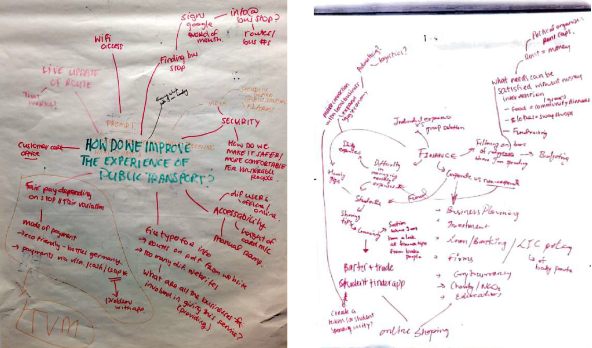
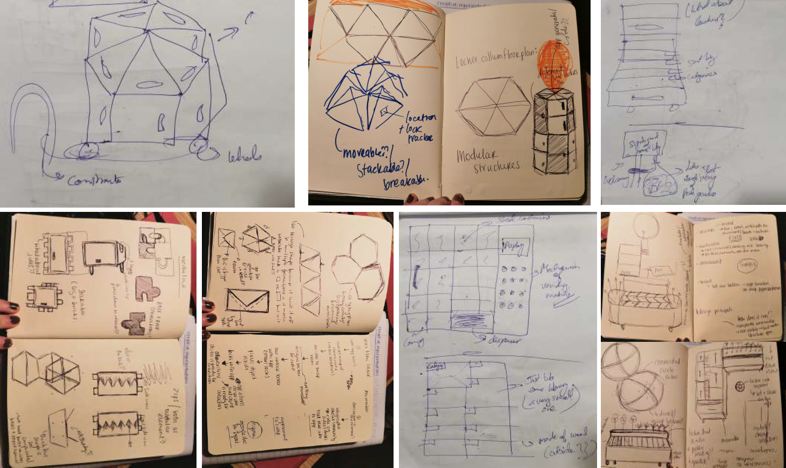
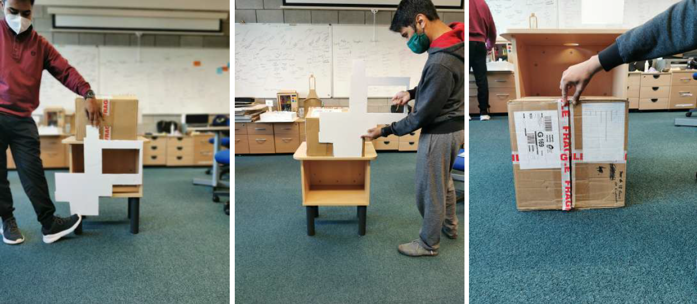
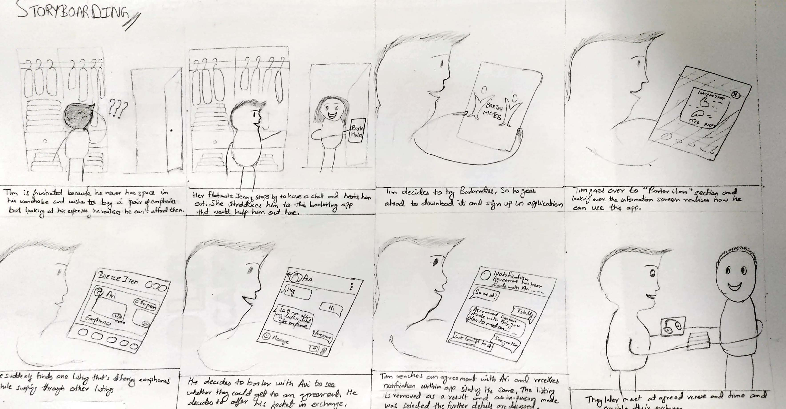

Introduction
Barter Mates is a design intervention for students who are looking for non-monetary solutions to comfortable living while building community and giving back. While there is already a multitude of financial aid technologies at hand, it seems difficult to engage these in everyday life. It is the lack of money that is the primary issue from our point of view as well as the ongoing management of it. The stresses of dealing with finance can lead to highly unpleasurable experiences. It is for this reason we would like to re-imagine the student finance experience.
Exploration of design space
As a group, we employed several tools for design ideation including brainstorming, body storming, mind-mapping and sketching. We began by brainstorming the topics as a group and creating mind-maps to visualise this thought process and to open up as many areas within the topics as possible.
Brainstorming and mind-mapping
Usage of collaborative sketching combined with a time limit was employed to ease nerves of getting bad ideas out in the open. This tool helped to take the word concepts from brainstorming and transform them into more tangible ideas.
Sketching out potential ideas for locker design
This process helped us go from an open ideation space to a more focused area of investigation where we then employed body storming as a design tool to explore the potential of our idea.
Bodystorming interactions of everyday objects
Prototyping
Storyboarding
This allowed us to understand the context where this application would be used and helped us immerse into user's shoes.
Storyboarding aimed at specific application task
Wireframing
Using storyboarding as reference, wireframes were sketched out for this mobile application. Mix of vertical and horizontal prototype were designed so that the main focus could be shifted towards the major tasks of this application.
Low fidelity paper based prototype
Locker Exploration & Prototyping
Mini-locker exploration
Final locker prototype
Evaluation
Usability testing was done using this lo-fidelity paper based prototype with the key audience of this applicaiton - being the students. Student dorm was used as the testing environment, the users were asked to complete the set tasks for this application followed by a de-briefing round where we addressed unexpected behaviour or any hesistations being faced by them during evaluating our tasks.
Evaluating with user
Mobile mounted on stand to record interactions
Evaluation outcomes
After completion of evaluating with the users, a formal discussion was done to share the learnings with each other and were listed down to a page.
- Sign up was not apparent/bold
- Chat button was hard to locate on screen
- Asked to change the wordings to match with the task
- More guidance needs to be offered for bartering task
- Inclusion of lockers is vital for this application to be successful
- To display the mode of exchange in the listing itself
Design Recommendations
Evaluation findings
Re-designing Prototype
Information screens for barter-item now showcases the exit options and has more guidance for this task.
Listing has apparent buttons with better wordings, showcases the mode of exchange in the listing and reflects active status
Barter Task
Person A decides to barter an item with Person B, so he presses the barter button on listing and talks with him.
Person A decides to present him with his side of exchange. If he already has a listing he could simply attach that or else he is required to create one.
Person A is required to add into the following fields in order to proceed ahead with his side of proposal
Reflection
Some of my learnings through this project:
- Following an user-centered design cycle
- Exploration of design space
- Working as a team to brainstorm and mindmap ideas together
- Preparing test material needed for evaluation
- Creation of vertical prototypes
- Conducting usability testing
- To be an active listener and asking open-ended questions during de-briefing
- Re-designing as per design recommendations